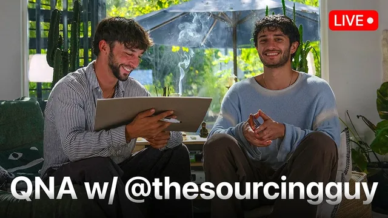

AI·사업·소싱 질문 다 받습니다 — @thesourcingguy와 Q&A

원본 영상 보기 →
- 고객은 모델명이 아니라 절감액과 역량에 돈을 냅니다
- 핵심 업무를 뜯기보다 바깥에서 시작하세요
- 완전히 새로 만들기보다 검증된 80%에 20%를 더하세요
한 줄 요약
Liam Ottley가 중국 소싱 에이전시를 운영하는 Isaac(the sourcing guy)과 함께 진행한 라이브 Q&A예요. AI를 활용한 아웃바운드 영업, AI 서비스 사업을 처음 시작해 월 1만 달러까지 키우는 법, 고객이 실제로 돈을 내는 이유, 그리고 Isaac의 저비용 이커머스 제품 전략(80/20 원칙)까지 한 번에 다룹니다.
전체 내용 정리
인바운드만 하던 소싱 에이전시가 아웃바운드를 설계 중이에요
Isaac은 중국에서 제품을 소싱해 기업·리테일·이커머스 브랜드에 공급하는 에이전시를 운영합니다. 지금까지는 콘텐츠(인바운드)에만 의존했고 아웃바운드 영업이 "제로"였어요.
Liam은 이틀 동안 Isaac을 위해 Claude Code 기반 AI 운영 체제(AIOS)를 만들었습니다.
아웃바운드의 기본은 원하는 대상을 정하고 리드 데이터베이스에서 찾아 연락처를 보강(enrichment)하는 거예요. 이 분야 대표 도구인 Clay는 가격이 높은데, 코딩 에이전트가 좋아지면서 "나만의 Clay"를 직접 만드는 사람도 늘고 있습니다.
Liam이 보는 승부처는 분명해요. 결국 제안서의 질입니다. 상대를 충분히 조사해 맞춤형 제안을 만들어 응답률을 올리는 거죠.
Isaac이 먼저 노리는 시장은 미국에서 연 260억 달러 규모인 기업용 판촉물이고, 대형 구매처의 구매 담당자가 핵심 타깃입니다.
이상적인 제안은 이래요. CEO가 직접 등장하는 짧은 소개 영상, 상대 로고를 입힌 3D 제품이 돌아가는 맞춤 웹사이트, 가격과 아이디어 자료를 함께 보내기. 영상은 몇 시간 동안 30초짜리 30개를 몰아 찍어 두고, AI가 회사 이름을 보고 알맞은 사이트에 붙이게 만들 계획입니다. 실제로 찍은 영상이라 AI로 오해받을 걱정도 없고요.
처음 시작한다면 기술보다 '접근 가능한 사업체'가 먼저예요
웹 개발 지식이 있는 입문자가 웹사이트와 AI 서비스 중 무엇을 먼저 팔지 물었습니다. Liam은 요즘은 웹 개발 지식조차 필수가 아니고, 웹사이트도 지역에 따라 괜찮은 입문점이라고 답해요.
다만 진짜 조언은 따로 있습니다. 처음엔 누구나 서툴기 때문에, 친척·부모님·이웃처럼 이미 관계가 있는 사업체에서 "안전한 놀이터"를 얻어 실험하는 것이 가장 큰 무기라는 거예요.
이때 고객의 핵심 업무를 깨뜨리면 안 됩니다. 예를 들어 AI 전화 응대원은 리드가 들어오는 전화선을 뜯어내고 교체해야 해서 가장 어려운 솔루션이에요. 웹사이트 문의 전화나 구글 비즈니스 프로필 쪽 일부 트래픽만 받는 식으로 바깥에서 시작하라고 조언합니다. 무료로 해 주고 대가로 추천사를 받는 게 가장 쉬운 진입로고요.
지인 네트워크에 기회가 전혀 없다면 Upwork가 대안이에요. Codex나 Claude 요금제를 쓰고 Udemy의 20달러짜리 코딩 에이전트 강의나 유튜브 무료 자료로 사례 프로젝트를 만든 뒤, 가격을 아주 낮게 잡고 프로필 사진과 소개 영상을 갖춰 첫 고객부터 평판을 쌓으라고 합니다.
Isaac은 이렇게 덧붙여요. 14~15살이라면 동네 가게에 500~1,000달러짜리 웹사이트를 파는 게 드롭쉬핑보다 훨씬 낫다고요. 드롭쉬핑은 5~10년 한 고수들만 살아남을 정도로 경쟁이 심하거든요.
고객은 새 모델이 아니라 결과에 돈을 냅니다
새 AI 모델(자막상 "Jev")을 워크플로우에 넣어 봤냐는 질문에 Liam은 잘라 말합니다. 새 도구가 나올 때마다 모두가 흥분하지만 고객은 그 모델에 관심이 없어요.
고객이 관심 있는 건 이런 겁니다. "이 직무를 AI 에이전트에 넘겨 연 5만 달러를 아낄 수 있다" 같은 비용 절감, 또는 Isaac처럼 인바운드 의존에서 벗어나 아웃바운드 시스템으로 매출을 두세 배 늘리는 역량 확대요. 새 모델은 더 빠르고 효율적이지만 기존 LLM으로도 가능하던 일의 변형일 뿐이라는 평가입니다.
Isaac은 과금 구조 얘기를 꺼냅니다. 선불 세팅비 500~1,000달러를 받기보다, 리드 흐름의 일정 비율을 받거나 리드를 판매하는 성과형 구조가 궁극적으로 ROI가 높다고 봐요. Liam도 예약 건당·리드 생성처럼 고객 사업과 분리된 오퍼가 팔기 쉽다고 동의합니다.
반대로 가장 무서운 작업도 있어요. 인스타그램 DM을 처리하는 세터 3~5명을 AI 예약 시스템으로 바꾸는 건 효과가 가장 크지만, 시스템이 멈춰 사흘 치 매출을 놓치거나 엉뚱한 말로 리드 20%를 쫓아낼 수 있거든요.
그래서 추천하는 순서는 이렇습니다. 먼저 자기 리드를 만드는 아웃바운드(콜드 이메일) 시스템을 직접 만들어 쓰고, 그 시스템을 그대로 상품으로 파세요. 제품과 마케팅을 일치시키는 거죠. 시스템을 개선할 때마다 내 영업과 고객 제품이 동시에 좋아집니다.
월 5천에서 1만 달러로 가는 법
오래 활동해 온 호주의 10대 Sam이 월 5천 달러에서 1만 달러로 가는 법을 물었어요.
Liam의 답은 둘입니다. 더 큰 고객에게 더 큰 걸 팔거나, 리테이너를 쌓아서 수입의 50%는 리테이너, 나머지 50%는 프로젝트로 채우라고요.
리테이너는 매달 시스템 점검·감사·최적화 형태예요. "AI 예약 시스템을 매달 모니터링하고 전환율을 일정 범위로 유지하겠다" 같은 식으로 월 500~1,000달러를 받을 수 있습니다. 만들어 두고 공짜로 돌봐 줄 게 아니라 돌보는 데 돈을 받으라는 거예요.
미국과 영국 중 어디가 나은지에 대해선 기술 수용 주기로 설명합니다. 미국엔 당장의 ROI보다 방향성을 보고 움직이는 얼리 어답터가 많고, 영국 쪽은 "나 같은 사업체에서 결과가 났는지"를 먼저 확인하려는 다수층이 많을 수 있다고요.
회의감이 클수록 첫 오퍼는 작아야 하고 초기 작업을 더 많이 떠안아야 합니다. 예를 들어 잔디 관리 업체에 "무료로 세팅해 줄 테니 마음에 들면 1,000달러, 아니면 한 푼도 안 내도 된다"고 제안하는 식이에요.
회계 자동화, 인수인계, SaaS에 대한 입장
반복 업무를 줄이고 싶은 회계사의 질문에는 회계 법인 메이크오버 사례를 들며 답합니다. 먼저 회계 데이터에 프로그램으로 접근할 수 있어야 해요. 데이터가 스프레드시트에 묶여 있으면 출발점이 나쁩니다. 조회하기 쉬운 데이터베이스로 옮긴 뒤 그 위에 앱을 올리고, VAT 대사 같은 작업 서류마다 스킬을 하나씩 만들고, 이를 모아 연말 결산 같은 결과물로 묶는 구조예요.
AIOS 인수인계는 Isaac의 경우 거의 할 게 없었습니다. 본인 컴퓨터에 로컬로 Claude Code를 세팅하고, 각 AI 회사 API 키와 스크래핑용 Apify, 호스팅용 Railway를 모두 그의 GitHub 저장소 안에 담았거든요. 처음부터 고객 계정으로 세팅하는 게 훨씬 낫다는 조언도 붙입니다.
AI 콜드콜은 사람과 구별이 안 되면 막기 어려워 결국 쓰이겠지만 회색지대가 될 수 있다고 봐요.
SaaS에는 반대합니다. 지금 AI에서 가장 위험한 사업이라면서요. 수만 명에게 도구를 퍼뜨릴 수 있는 자신조차 안 하고 있고, 복제가 너무 쉬워서 성공해도 금방 다른 것에 밀린다는 이유입니다.
왜 니치를 정하지 않냐는 질문엔 콘텐츠를 위해 매달 회계·소싱·코칭·이벤트 등 업종을 바꿔 가며 시장을 읽는 중이라고 설명하면서도, 여러분은 반드시 니치를 좁히라고 권해요.
Isaac의 1인 이커머스 모델: 80%는 그대로, 20%만 바꾸기
Isaac은 창업자의 95%가 3만~5만 달러 이하로 6개월 안에 시작하길 원한다고 전제합니다.
제조 방식은 두 갈래예요. 완전 맞춤인 OEM과, 기존 제품에 브랜드만 붙이는 화이트 라벨(ODM). OEM은 대개 5만 달러 이상과 6개월~2년이 듭니다.
Isaac은 화이트 라벨이 흔하다는 편견에 반대해요. 아직 미국에 안 들어왔거나 마케팅을 제대로 못 한 좋은 제품이 많다고 봅니다.
순서는 이렇습니다. 광고에서 본 제품을 이미지 검색으로 Alibaba나 Source Ready 등에서 찾고, 단순 드롭쉬핑 대신 재고를 사서 중국 창고에 두고 로고를 붙여 발송하는 브랜디드 드롭쉬핑으로 최소 수량과 초기 비용을 낮게 시작해요.
그다음이 핵심입니다. 팔면서 고객과 개선점을 파악한 뒤, 같은 공장과 제품의 20%만 바꾸는 "ODM+1"로 넘어갑니다. 마커라면 잉크 색, 그립, 휴대용 부품만 바꾸는 식이죠.
장점이 많아요. 금형비가 일부만 들고 출시가 훨씬 빠릅니다. 이미 그 제품을 만들어 온 공장이라 품질 문제가 적고, 부품을 대량으로 사들여 원가도 낮고요.
무엇보다 변경 사항이 추측이 아니라 실제 판매 경험에서 나온 고객 요구라서, 처음부터 완전 맞춤으로 간 경쟁자보다 오히려 더 좋은 제품이 되는 경우가 많다고 합니다. 완전 맞춤은 약 20%의 예외적 경우에만 맞는 길이라는 설명이에요.
생산성 죄책감은 버릴 게 아니라 신호예요
쉬는 한두 시간에도 죄책감이 든다는 질문에 Liam은 그 감정이 있다는 것 자체에 감사하라고 답합니다. 더 잘하고 싶다는 마음의 자연스러운 부산물이거든요.
대신 지금 하는 일이 정말 성과를 움직이는 일인지 우선순위를 점검하고, 아침 첫 업무 블록에서 할 일 목록 중 가장 마음의 저항이 큰 일, 그러니까 피하고 싶은 어려운 일을 가장 맑은 상태일 때 먼저 하라고 권해요.
Isaac은 휴식을 휴대폰 충전처럼 더 깊은 작업을 위한 재충전으로 봐야 한다고 덧붙입니다. 번아웃되면 어려운 일을 할 에너지 자체가 사라지니까요.
핵심 인사이트
- 고객은 모델명이 아니라 절감액과 역량에 돈을 냅니다: 새 모델이 나올 때마다 흥분하기 쉽지만, 설득력은 "연 5만 달러 절감"이나 "아웃바운드로 매출 두세 배" 같은 결과 언어에서 나와요. 자동화를 사는 쪽이라면 업체 제안서도 이 기준으로 읽으면 됩니다.
- 핵심 업무를 뜯기보다 바깥에서 시작하세요: AI 전화 응대원이나 세터 대체처럼 매출 동선을 건드리는 자동화는 효과도 크지만 리스크도 가장 큽니다. 일부 트래픽이나 분리된 영역에서 먼저 검증하는 편이 안전해요.
- 완전히 새로 만들기보다 검증된 80%에 20%를 더하세요: Isaac의 ODM+1 전략은 제품뿐 아니라 자동화에도 통합니다. 이미 돌아가는 걸 쓰면서 실제 데이터로 필요한 부분만 고치는 쪽이 빠르고 싸고 결과도 좋아요.
오늘 당장 해볼 것
- 자동화 업체의 제안서나 견적서를 다시 열어 보세요. "어떤 모델·도구를 쓰는지"가 아니라 "연간 몇 시간·얼마를 아끼는지"가 숫자로 적혀 있나요? 없으면 그 숫자를 요청하면 됩니다.
- 우리 사무실의 핵심 데이터가 스프레드시트에 흩어져 있는지 점검해 보세요. 장부든 환자 기록이든 고객 기록이든요. 업체에 "이 데이터를 조회 가능한 데이터베이스로 옮기면 어떤 작업을 자동화할 수 있는지" 물어보시고요.
- 새 자동화를 도입할 때는 전화나 예약처럼 매출이 들어오는 동선을 한 번에 바꾸지 마세요. 웹사이트 문의 일부처럼 분리된 영역에서 먼저 시범 운영하자고 요청하고, 계정은 처음부터 내 명의로 세팅해 달라고 하세요.